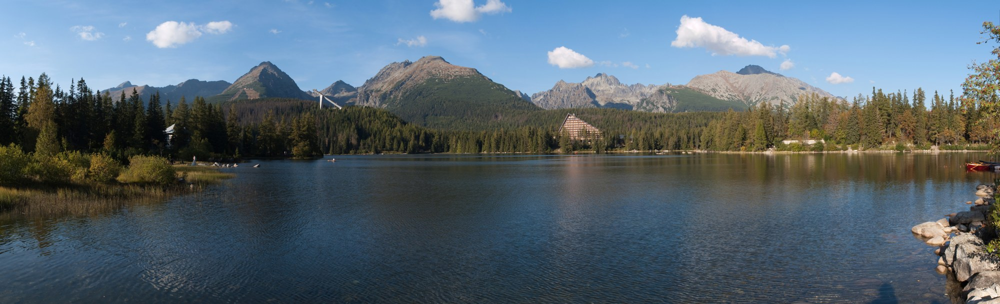

דלגו לתוכן
TATRY
/
יומן מסע משפחתי
· SUMMER 2027
עומרי וליאת · יובל 5 ואיתי 7 · 9 לילות
הטטרה שלנו.
ההרפתקה מתחילה כאן.
9–18 באוגוסט 2027 · Hotel Hubert, Gerlachov

ŠTRBSKÉ PLESO / HIGH TATRAS
10 ימים בהרים · אוגוסט 2027
הכנה לאופליין
נבדק ב־15.09.2026
•
שעות ומחירים שפורסמו כעת הם בסיס לתכנון; פרטי אוגוסט 2027 טרם אומתו.
המסלול שלנו
מקומות ושעות
עשינו / נשאר
להזמין מראש
כרטיסים וקבצים
תקציב והוצאות
לפני שיוצאים
בלי אינטרנט
מה נבדק ותוקן